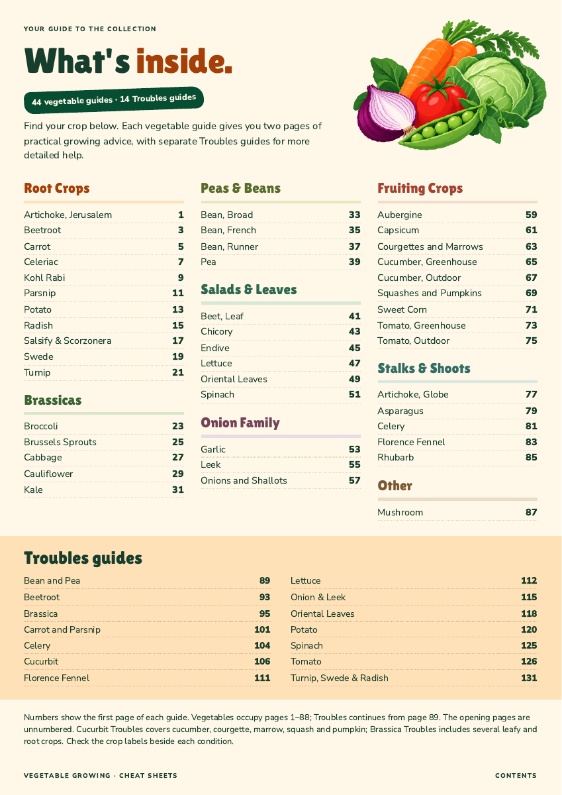
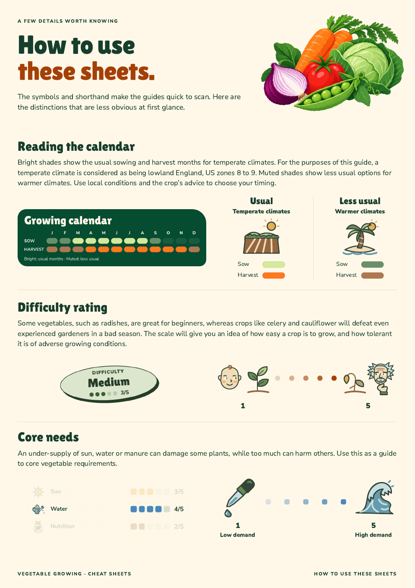

Contents & how to use this book
Two facing spreads adapted from the approved illustrated originals for the 185 × 240 mm paperback. The previews below are rendered from the actual PDF.
Pages 4–7 · Approved by John on 7 October 2026. These separate proofs keep the current guide page numbers; they have not yet replaced the opening pages in the full book.
The contents · pages 4–5
The harvest illustration, coloured crop families and warm orange Troubles panel carry over, with all 44 growing guides and 14 Troubles groups linked to their current book folios.


The illustrated how-to · pages 6–7
The approved explanations and illustrations have more room across a spread: the calendar and climate keys on the left, difficulty and core needs on the right.


Click a page to enlarge it. Metric pages have the same content and layout, with the edition name changed in the footer. The title page, publication details and introduction remain for the next pass.
Compare with the approved A4 originals


Source and proof checks
All 58 contents references were checked against the Bookvault assembly plan. Both four-page PDFs have the expected trim, bleed, folios, embedded fonts or glyphs, and unchanged approved explanation text. All eight rendered pages were visually inspected.
The calendar and scale captures retain the original pixels. Final raster and colour preflight remain; this is a design proof, not a production release.
Approval record · Build and source receipt · PDF checks · Adaptation notes